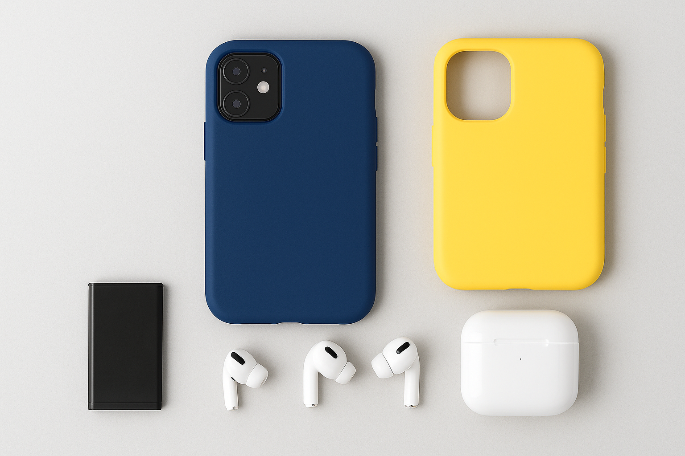

Warranty Terms
A 3-month warranty is provided for all repaired components of the service job (with a 1-month warranty for any battery replacement), starting from the date the repair is completed.
This warranty covers only the replaced or repaired parts and does not include:
-
Physical damage (such as dropping or impact)
-
Liquid damage
-
Exposure to extreme heat, cold, or pressure
-
Misuse, negligence, or normal wear and tear
-
Any other damage resulting from careless or reckless use
We do not take responsibility for any existing or unrelated problems on the device.
Customer Responsibilities
-
Please check all device functions carefully before leaving the store, as we are not responsible for issues reported later, except for the repaired components.
-
If the frame of your device is bent (even slightly), functionality cannot be guaranteed and no warranty will apply. Any lifted or damaged screen caused by a bent frame is also excluded from warranty coverage.
-
All repairs are tested after completion; however, hidden or unrelated issues that arise later will only be inspected and quoted separately.
Warranty Claims
-
Please keep your warranty receipt and bring it with your device when making a warranty claim. We are unable to process any warranty repair without this document.
-
Other forms of proof (such as a bank transaction) will not be accepted as valid evidence for warranty claims.
-
The warranty is void if another technician or repairer opens, examines, or performs any work on the device after our repair.
Water-Resistant Devices
Devices originally described as “water-proof” or “water-resistant” may lose these properties after repair or servicing.
Once repaired by Easyfix & Gadgets, we do not guarantee that your device will remain water-proof or water-resistant.
Refunds & Returns
Once the repair or service is complete and the repair form is signed, no refunds will be issued.
Under Australian Consumer Law, you are entitled to a refund or exchange if a product has a major problem, such as:
-
A fault that would have stopped you from purchasing the item had you known about it
-
The item being unsafe
-
The item being significantly different from its sample or description
-
The item not performing as promised or as requested, and it cannot be easily fixed
If the problem is not major, we will repair the item within a reasonable timeframe.
If it cannot be repaired within that period, you may choose a refund or replacement.
Please retain your proof of purchase (e.g., receipt) for any warranty or refund claim.
Abandoned Property
Unless alternative arrangements are made, Easyfix & Gadgets will hold your repaired or replacement device at the drop-off location for up to 60 days.
If the device is not collected within this period — and after three unsuccessful attempts to contact you — it will be considered abandoned.
In such cases, Easyfix & Gadgets may dispose of the product in accordance with applicable law, including selling it to recover any outstanding service charges. We reserve all statutory and lawful liens for unpaid fees.